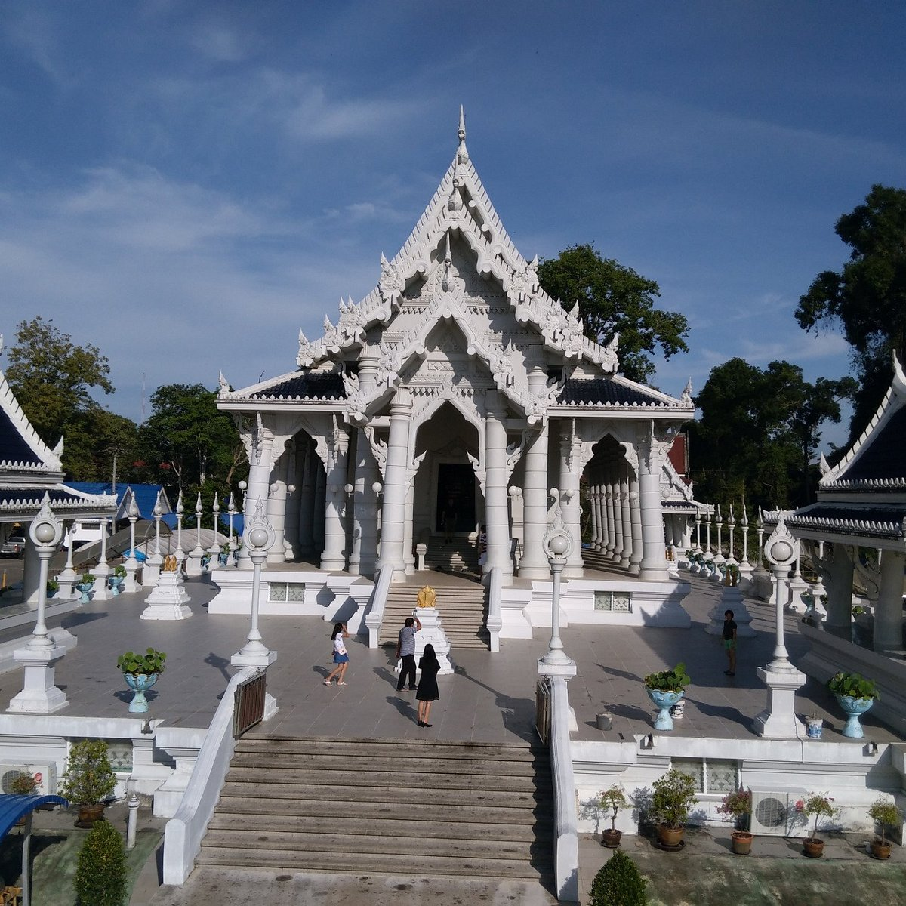
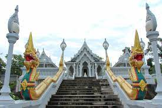
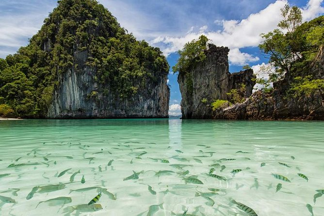
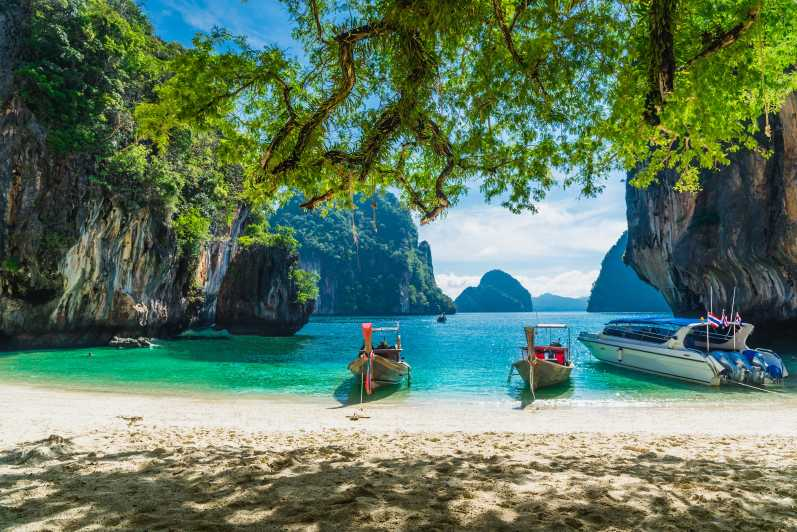
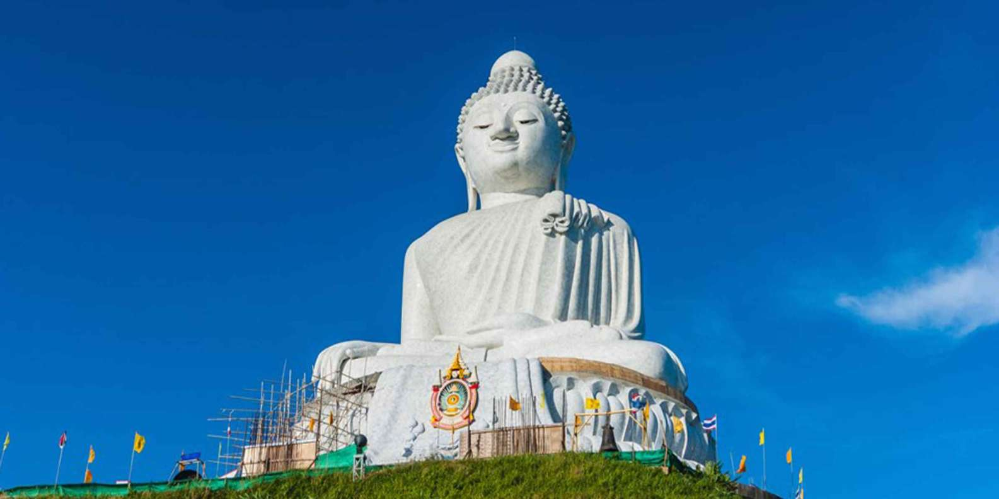
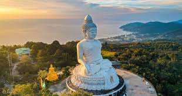

Best places to visit in Thailand:
wat kaew korawaram



One of the biggest temples in Krabi, Wat Kaew Korawaram, sits within the center of Krabi Town and is a must-see attraction. The white temple features a beautiful staircase that leads in with ornate carvings and gold dragons. Because of the decoration, during the sunset hours, the temple turns golden, making it look even better.
Tour: Hong islands



Koh Hong, or Hong Island, is located in the province of Krabi, in the south of Thailand. This little jewel, whose name means “room island”, enchants visitors with its breathtaking natural beauty and its fairy-like charm. Hong Island is best known for its incredibly impressive limestone formations and is certainly one of the most beautiful islands in all of Thailand. But not only the limestone cliffs are stunning, also the bay with the fine white powdered sugar beach of Hong Island is truly breathtakingly beautiful. Another highlight on the island is the Hong Lagoon, which is only accessible by boat through a narrow opening.
Big Buddha Phuket


